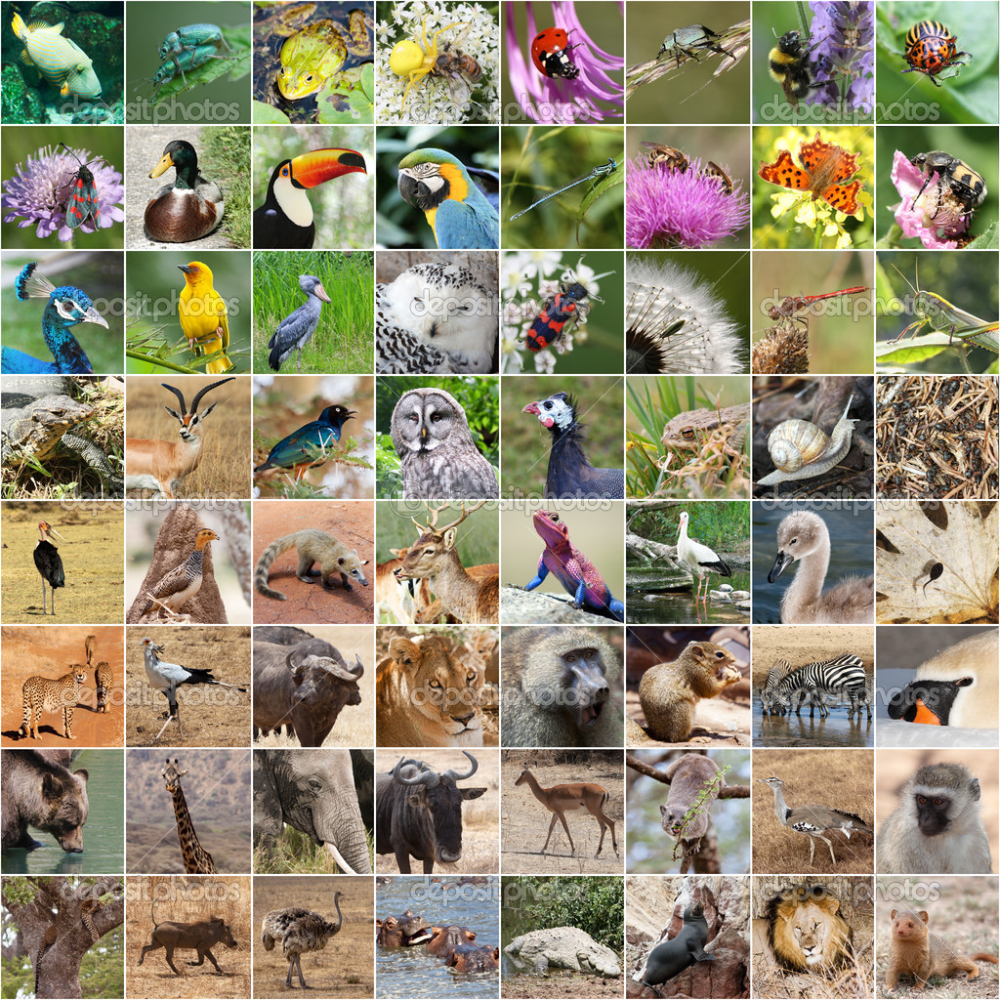
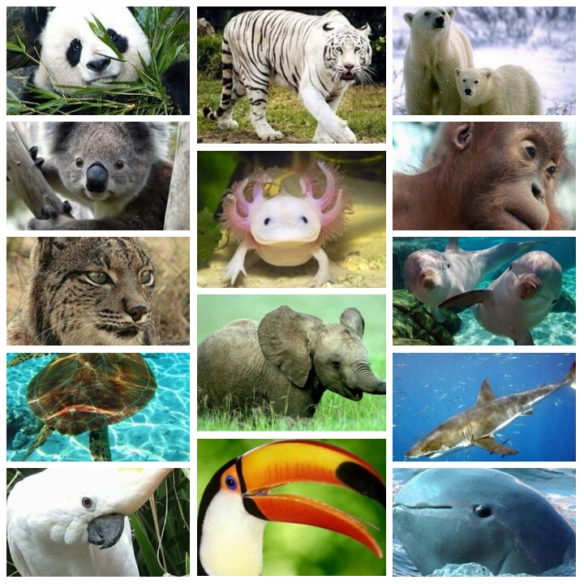

Lamentablemente, hoy en día son muchas las especies en peligro de extinción. Muchas de ellas, debido a la acción del hombre y el cambio climático global, lo que resulta igualmente un efecto indirecto de las actividades del ser humano. Algunas de estas especies en peligro ya están condenadas a desaparecer de aquí a unos años y, aunque hay muchas organizaciones que trabajan por preservarlas, día a día siguen sufriendo. Hay que salvar a la madre naturalezaya que nos ayuda para nuestro día a día.